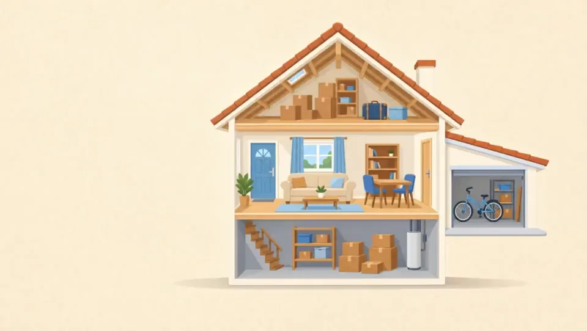

Die sichtbare Bewegung folgt der Scrollposition. Text und Navigation bleiben echte HTML-Elemente.
Lokale Runtimeprobe: Video, Bildsequenz und Bewegung eines einzelnen Bildes.
GPT Image 2 → Kling 3.0 Turbo; akzeptierte erste 1,5 Sekunden. Später angeschnittene Garage verworfen.
Poster. JavaScript erweitert die Darstellung, falls erlaubt.

Die sichtbare Bewegung folgt der Scrollposition. Text und Navigation bleiben echte HTML-Elemente.